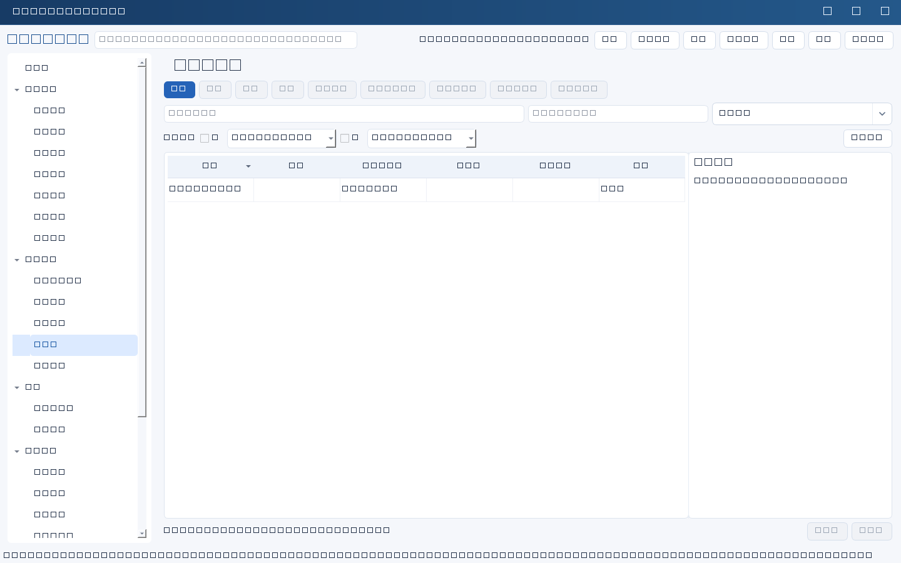
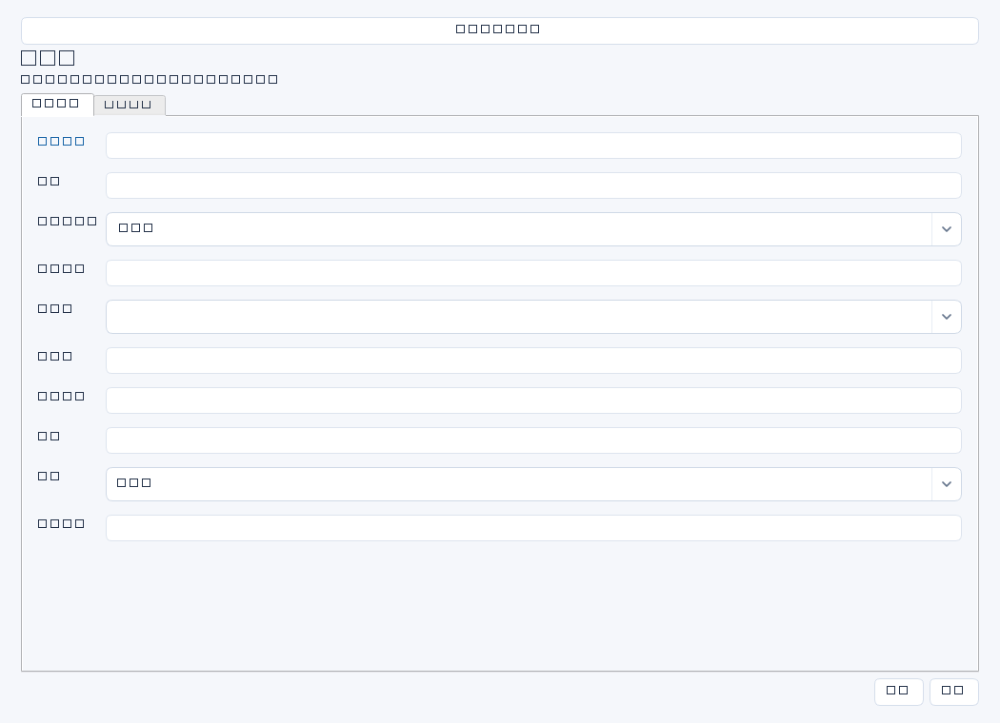

把业务提出的IT需求整理为有问题证据、基线、目标、成本和决策依据的需求池，便于比较取舍。需求记录不等于项目立项或预算批准。


操作步骤与资料获取
- 访谈提出部门，取得当前流程、耗时样本、差错数据和业务影响，先核实问题而非直接照录解决方案。
- 新增需求，明确业务负责人、当前基线和目标，所有数据标注范围及采集周期；没有数据时说明需要补采。
- 与技术、采购和财务估算工作量、费用和依赖，区分初估与已报价，避免承诺尚未核实的资源。
- 组织优先级和投入产出讨论，在决策依据记录通过、暂缓或拒绝理由；需实施时人工建立项目/任务并保留来源。
字段逐项说明
| 操作 / 字段 | 详细说明 |
|---|---|
| 名称 | 需求标题，强制非空；建议描述业务改进，如“缩短仓库入库确认时间”。 |
| 部门 | 提出及受益部门；建议用正式组织名称。 |
| 业务负责人 | 确认问题、目标和验收结果的人名；避免只写IT联系人。 |
| 问题证据 | 记录流程观察、工单、差错样本或统计来源的位置、时间与样本量。 |
| 当前基线 | 当前可度量表现及计算口径，如工作日单据确认中位时长；文本字段，可写待采集及计划。 |
| 目标 | 期望改善幅度、完成时间和约束，建议与基线采用相同口径并经业务确认。 |
| 优先级 | 界面空/高/中/低；建议基于影响、紧迫性与依赖排序，不是自动排期。 |
| 工作量 | 估算投入，非空时强制非负十进制纯数字；本字段没有单位栏，建议在决策依据注明人日及估算范围。 |
| 预计费用 | 估算金额，非空时强制非负十进制纯数字；本模块无币种字段，建议在决策依据注明币种、含税口径和报价有效期。 |
| 依赖 | 列前置接口、数据质量、业务规则、供应商资源和审批条件；自由文本。 |
| 状态 | 使用通用状态表达评估/推进情况；不能把保存状态理解为自动立项。 |
| 决策依据 | 记录成本收益比较、业务排序、会议结论、决策日期与证据位置；含费用及工作量口径。 |


示例（仅演示）
| 操作 / 字段 | 详细说明 |
|---|---|
| 名称 | 缩短仓库入库确认时间 |
| 部门 | 仓储部 |
| 业务负责人 | 赵敏 |
| 问题证据 | 2026年3月抽样200单，中位确认时长30分钟；原表存受控资料库/需求/入库 |
| 当前基线 | 工作日入库完成至ERP确认中位时长30分钟，样本200单 |
| 目标 | 上线后连续4周同口径中位时长≤10分钟 |
| 优先级 | 中 |
| 工作量 | 15 |
| 预计费用 | 30000 |
| 依赖 | 仓储接口规范、测试环境和业务样本确认 |
| 状态 | 待确认 |
| 决策依据 | 初估15人日，人民币含税30000元；待需求评审确认范围，尚未批准立项 |
形成闭环
- 形成有理由的采纳、暂缓或拒绝结论，保留会议纪要与费用估算版本。
- 转项目时人工登记来源与范围，需求状态不会自动联动。
- 实施后用相同口径复测收益，避免以开发完成替代业务目标实现。
常见误区与边界
- 没有基线就写“提升50%”，无法验收。
- 工作量填“15人日”或费用填“3万元”会被数字校验拒绝。
- 把初步报价当正式预算，或认为高优先级会自动分派资源。